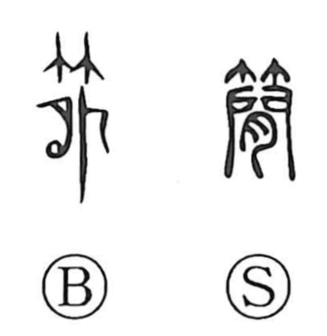

簡

Kun: erabu, fuda | On: kan
simplicity ・ brevity ・ letter ・ bamboo slip ・ to abridge
Explanation
A phono-semantic character: the bamboo radical 竹 supplies the material sense, while 間 (kan) gives the sound. In antiquity, a 簡 was a bamboo strip—bamboo lightly singed over a flame and planed smooth into a thin plate for writing. From this concrete tool arose the senses of a bamboo tag and a written piece. Because writing on bamboo slips was a more straightforward alternative to costly jade or silk, the character came to express ease and simplicity, and by extension the idea of abridging or omitting, as felt in words for ease and brevity.